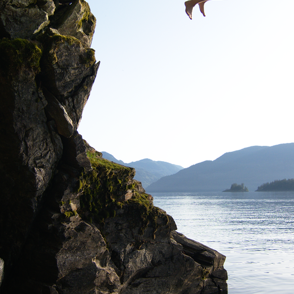

<!doctype html>
<html lang="en">
<meta charset="utf-8">
<title>SnapDOM capture fixture</title>
<style>
  *{box-sizing:border-box}body{margin:0;font:15px Arial,sans-serif;color:#26323b}
  #capture{width:960px;height:540px;padding:28px;background:#f4f2ec;overflow:hidden}
  #capture.alpha{background:transparent}
  header{display:flex;justify-content:space-between;align-items:center;margin-bottom:22px}
  h1{margin:0;font-size:25px;letter-spacing:-.6px}small{font-size:12px;color:#63716a}
  .badge{background:#d5eadc;color:#245f3c;border:1px solid #a2cbb1;border-radius:20px;padding:8px 14px}
  .grid{display:grid;grid-template-columns:2fr 1fr;gap:20px}
  .card{border:1px solid #dbded5;background:#fff;border-radius:12px;box-shadow:0 9px 23px #263d4916;overflow:hidden}
  .stats{display:flex;gap:16px;margin-bottom:20px}.stat{flex:1;padding:17px;background:linear-gradient(135deg,#f9fefa,#d5e7dd);border:1px solid #bed5c7;border-radius:10px}
  .stat b{display:block;font-size:24px;margin:8px 0 4px}h2{font-size:14px;margin:0 0 12px}
  .table{padding:18px}table{width:100%;border-collapse:collapse;font-size:13px}td,th{text-align:left;padding:11px 5px;border-bottom:1px solid #e9ece6}th{color:#688071;font-size:11px}
  .ok{color:#2d704d}.muted{color:#82918a}.photo{display:block;width:100%;height:175px;object-fit:cover;object-position:center 45%}.caption{padding:16px}
  .caption p{line-height:1.5;font-size:13px;color:#63716a}.bars{display:flex;height:42px;gap:7px;align-items:end;margin-top:12px}.bars i{display:block;background:#569478;width:20px;border-radius:3px 3px 0 0}
  footer{margin-top:22px;font:12px monospace;color:#63716a;display:flex;justify-content:space-between}
</style>
<main id="capture">
  <header><div><small>LOCAL / WORKSPACE</small><h1>Capture every detail.</h1></div><span class="badge">All systems ready</span></header>
  <div class="grid">
    <section>
      <div class="stats"><div class="stat"><small>Saved today</small><b>128</b><small>Text, icons and subtle gradients</small></div><div class="stat"><small>Pixel fidelity</small><b>100%</b><small>Keep sharp edges sharp</small></div></div>
      <div class="card table"><h2>Recent exports</h2><table><thead><tr><th>DOCUMENT</th><th>SIZE</th><th>STATUS</th></tr></thead><tbody>
        <tr><td>Production schedule</td><td>1920 × 1080</td><td class="ok">Complete</td></tr>
        <tr><td>Spring catalogue</td><td>3840 × 2160</td><td class="ok">Complete</td></tr>
        <tr><td>Dashboard — αβγ</td><td>1920 × 1080</td><td class="ok">Complete</td></tr>
        <tr><td>Layered illustration</td><td>RGBA / 8-bit</td><td class="muted">Queued</td></tr>
      </tbody></table></div>
    </section>
    <aside class="card"><div class="caption"><h2>Photos belong here too.</h2><p>A real photo beside small text, flat fills, shadows and transparent corners.</p><div class="bars"><i style="height:25%"></i><i style="height:45%"></i><i style="height:35%"></i><i style="height:75%"></i><i style="height:62%"></i><i style="height:100%"></i><i style="height:80%"></i><i style="height:91%"></i></div></div></aside>
  </div>
  <footer><span>Lossless by default · no network at capture time</span><span>01 / 01</span></footer>
</main>
<script>if(new URLSearchParams(location.search).has('alpha'))document.querySelector('#capture').classList.add('alpha')</script>
</html>
